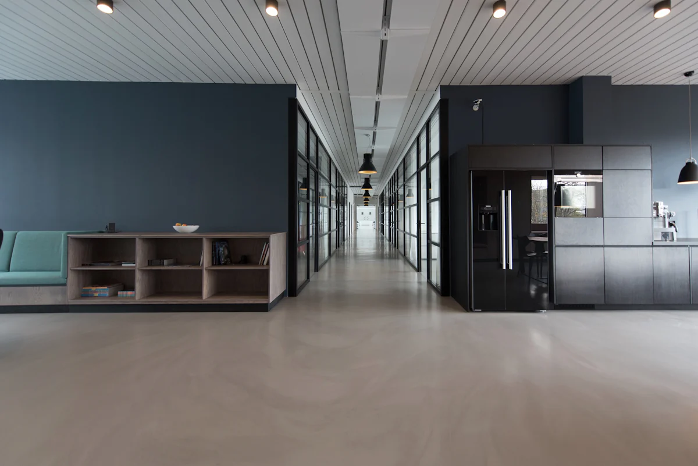

Specialized Civic Directorates Working in Harmony
Each municipal department operates under clear legislative mandates, guided by Chief Officers and reporting to elected council committees.
Whether responding to urgent road repairs, inspecting local restaurants for food safety, processing property title registries, or commissioning green solar parks, our departments ensure continuous operational excellence.
Direct Citizen Engagement
All department directors hold scheduled monthly public consultative hearings to resolve community concerns.
Civil Engineering & Public Works
Responsible for the structural design, maintenance, and modernization of our 1,820 km highway network, 34 vehicular bridges, pedestrian underpasses, and stormwater flood channels.
Pothole Response Fleet
24-hour turnaround on reported arterial road defects.Storm Drainage Network
Periodic mechanical desilting across 48 ward catchment basins.Town & Country Planning
Formulates the 20-Year Metropolitan Development Masterplan, enforces zoning regulations, reviews architectural applications, and preserves our designated heritage conservation areas.
Building Sanctions
Automated CAD Auto-DCR compliance verification.Heritage Preservation
Protection orders for 142 Victorian and Georgian structures.
Public Health & Environmental Sanitation
Safeguarding public wellness through daily mechanized street sweeping, clinical immunization centers, food hygiene inspections, and biological vector mosquito suppression.
Food Hygiene Ratings
Unannounced hygiene inspections of 2,400+ restaurants.100% Segregated Waste
Electric vehicle collection diverting 650 tons daily.Revenue & Council Property Assessment
Responsible for the valuation and collection of municipal council tax, commercial business rates, trade licensing, and advertisement hoardings tariffs under statutory oversight.
Digital Billing Gateway
Instant payment receipts and account history download.GIS Property Mapping
Satellite verification ensuring fair, equitable valuations.
Parks, Horticulture & Urban Forestry
Maintaining 328 public parks, botanical reserves, children’s play areas, roadside tree avenues, and urban water bodies to enhance clean air and community well-being.
Botanical Nurseries
Supplying 50,000 native saplings free to schools and citizens.Playground Safety
Weekly inspections ensuring RoSPA certified play gear.Information Technology & Smart City Operations
Engineering the digital architecture of our smart city: operating cloud municipal portals, real-time command centers, automated chatbot support, and resilient cybersecurity infrastructure.
Integrated Command Center
24x7 telemetry from traffic, air quality, and water sensors.Data Privacy & Security
ISO 27001 certified citizen data encryption standards.
Department Executive Directory
Direct contact points for departmental directors and administrative secretaries.
| Department | Director In-Charge | Office Location | Direct Telephone | Official Email |
|---|---|---|---|---|
| Civil Engineering & Roads | Eng. Robert Sterling | MMR Complex, Wing B, 3rd Floor, Salem | +91 9876543210 | support@municipalcorp.in |
| Town & Country Planning | Arch. Julian Vance | MMR Complex, Wing A, 2nd Floor, Salem | +91 9876543210 | support@municipalcorp.in |
| Public Health & Sanitation | Dr. Fiona Campbell | Civic Health Annex, Hasthampatti, Salem | +91 9876543210 | support@municipalcorp.in |
| Revenue & Property Assessment | Mr. Nigel Thorne | MMR Complex, Ground Floor, Salem | +91 9876543210 | support@municipalcorp.in |
| Smart City Operations (IT) | Ms. Maya Patel | ICCC Facility, Chinna Thirupathi, Salem | +91 9876543210 | support@municipalcorp.in |
Unsure Which Department Can Help?
Contact our single-window citizen helpdesk. Our automated triage will route your request directly to the appropriate officer within 15 minutes.